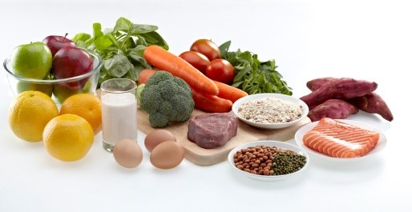
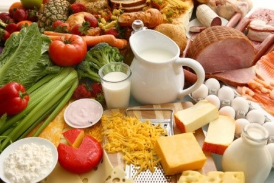
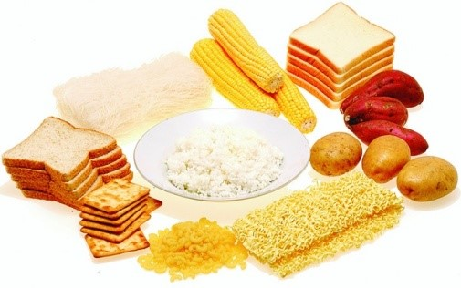
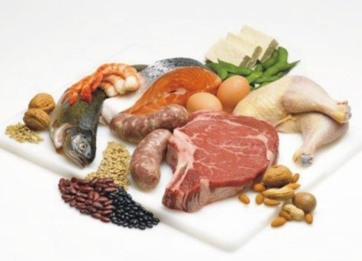
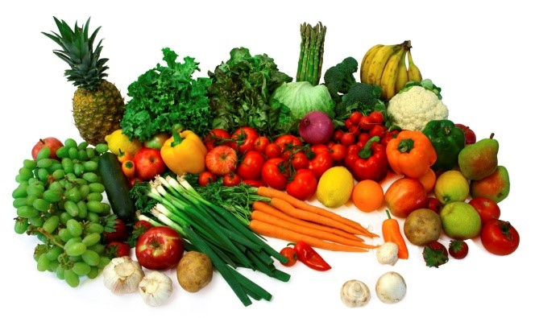
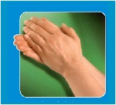
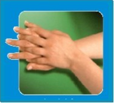
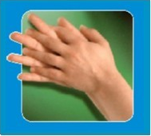
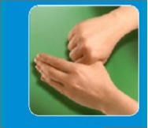
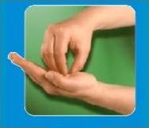

Quizi
Mulai
Hasil
Total Score
Level
Score
1
2
3
4
5
Total
Score Akhirmu :
Ulang Quiz
Selesai
Level 1
1. Kelompok bahan makanan sumber karbohidrat adalah...


2. Makanan yang dikatakan baik apabila...
4 sehat 5 sempurna
Gizi seimbang
Karbohidrat tinggi protein sedang
Protein tinggi karbohidrat sedang
3. Kelompok bahan makanan sumber protein adalah


4. Kelompok bahan makanan sumber vitamin adalah

5. Makanan tidak aman atau tidak sehat apabila mengandung
Bahaya mikroba, bahaya kimia, bahaya fisik
Bahaya bakteri, bahaya biologis, bahaya kimia
Bahaya fisik, bahaya biologis, bahaya kimia
Bahaya mikroba, bahaya bakteri, bahaya biologis
Kembali
Skip
Level 2
1. Sayur ini akan lebih bergizi apabila di masak ,tidak seperti banyak sayuran lainya. Sayuran ini banyak mengandung karoten, antioksodan yang memberikan warna orange pada sayur ini..
Bayam
Brokoli
Alpukat
Wortel
2. Sayuran dan buah buahan mengandung zat gizi yang bermanfaat untuk....
Menghasilkan tenaga
Menyediakan makanan cadangan
Melindungi tubuh dari penyakit
Mengganti sel sel tubuh yang rusak
3. Sayur dengan kandungan fe paling tinggi adalah ....
Bayam
Kelor
Brokoli
Sawi
4. Buah yang menggantikan sel darah merah sebagai metabolisme tubuh adalah....
Tomat
Wortel
Air Kelapa
Raspberry
5. Dalam buah-buah an banyak terkandung vitamin. Beberapa mengandung vitamin yg baik untuk kesehatan mata...
Wortel
Alpukat
Apel
Jeruk
Kembali
Skip
Level 3
1. Ada 5 program prioritas PHBS diantaranya adalah?
KIA, Gizi, Kesehatan Lingkungan, Gaya Hidup, Asuransi Kesehatan
Air bersih, ASI Eksklusif, Cuci tangan, Jamban sehat, Tidak merokok
Menimbang balita, Aktifitas fisik, Memberantas jentik, Air bersih, ASI Eksklusif
KIA, Gizi, Kesehatan Lingkungan, ASI Eksklusif, Cuci tangan
2. Berikut indikator PHBS yang benar adalah?
Memberi bayi ASI Eksklusif
Mencuci tangan dengan air bersih dan sabun
Makan sayur dan buah setiap hari
A, B, C benar semua
3. Berikut syarat memiliki jamban sehat adalah…
Jarak sumber air minum dengan lubang penampungan minimum 10 m.
Tidak mencemari tanah disekitarnya
Dapat dijamah oleh serangga dan tikus
A, B benar semua
4. Perhatikan gambar-gambar berikut
1.

2.

3.

4.
5.

6.

Urutkan langkah-langkah mencuci tangan yang baik dan benar sesuai gambar diatas..
6-5-4-3-2-1
4-3-2-1-5-6
1-2-3-4-5-6
5-4-3-2-1-6
5. Berikut merupakan salah satu contoh aktifitas fisik adalah…
Kembali
Skip
Level 4
1. Apa yang dimaksud dengan 1000 Hari Pertama Kehidupan?
masa sejak anak dalam kandungan hingga berumur 2 tahun
masa sejak lahir hingga berumur 2 tahun
masa sejak anak berusia 1 bulan hingga 2 tahun
masa sejak anak berusia 1 bulan hingga 1 tahun
2. Mengapa 1000 Hari Pertama Kehidupan disebut Periode Emas Pertumbuhan Bayi?
karena masa dimana anak bertumbuh
karena masa dimana anak bertumbuh dengan sempurna
karena masa dimana anak bertumbuh dan berkembang
karena masa dimana otak bertumbuh
3. Mengapa anak yang kurang gizi pada 1000 Hari Pertama Kehidupan sangat rawan dalam masa bertumbuhan?
karena jika kekurangan gizi pada masa 1000 HPK maka masa selanjutnya sulit diperbaiki
karena sulit bertumbuh pada saat masa berikutnya
karena jika kekurangan gizi pada 1000 HPK maka masa selajutnya tidak bisa diperbaiki
karena sulit berkembang dan bertumbuh pada masa berikutnya
4. Apa yang tidak terjadi jika bayi tidak mendapatkan cukup gizi yang dibutuhkannya di Periode Emas ini?
Pertumbuhan otak terhambat
anak menjadi pendek (stunting)
Anak menjadi bertumbuh dan berkembang
Anak akan sulit mengikuti pelajaran saat bersekolah
5. Bagaimana caranya agar kebutuhan gizi bayi di 1000 Hari Pertama Kehidupan (Periode Emas) dapat dipenuhi dengan sempurna?
makan makanan gizi yang seimbang
melaksanakan iniasiasi menyusu dini (IMD)
pemberian vitamin tambahan
makan sesuai kemauan tanpa melihat apa yang dimakan
Kembali
Skip
Level 5
1.Dibawah ini yang termasuk masalah gizi utama adalah....
Malnutrisi
Kekurangan Vitamin A
Obesitas
Stunting
2.Yang merupakan tanda-tanda marasmus, kecuali....
Berat badan sangat kurang
Terlihat sangan kurus tinggal kulit pembungkus tulang
Edema
Muscle wasting
3.Tindakan pertama yang harus dilakukan bila menemui penderita gizi buruk baik dengan komplikasi maupun tidak adalah....
Rujuk segera ke UGD
Diberikan infus NaCl atau RL
Diberikan transfusi darah
Diberikan air gula
4. Pemberian asam folat pada ibu hamil bertujuan untuk....
Pertumbuhan tulang dan gigi
Membantu kesehatan mata
Membantu produksi sel darah merah
Perkembangan sistem saraf dan sel darah
5. Pada penderita kekurangan vitamin A biasanya terjadi gangguan mata yang ditandai dengan bercak bitot disebut....
Xeropthalmia
Miopi
Rabun senja
Rabun dekat
Kembali
Finish